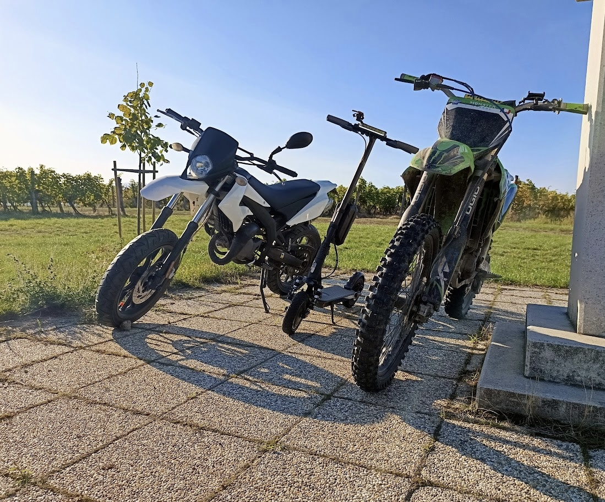

👋 Hi, ich bin Ayhan
Willkommen auf eminer supa dupa seite
🧑💻 Über mich
- Ich interessiere mich sehr für Wirtschaft und möchte später BWL studieren, um mein Wissen in diesem Bereich zu vertiefen.
- Planeten und Sterne faszinieren mich, und ich liebe es, mit Freunden den Nachthimmel zu beobachten. Mein Lieblingsplanet ist Saturn, den ich wegen seiner einzigartigen Ringe besonders beeindruckend finde.
- In meiner Freizeit beschäftige ich mich mit Kryptowährungen und der Börse, da ich den Markt spannend finde.
- Ich habe meinen Ninebot E-Scooter auf bis zu 80 km/h optimiert, da es mir sehr viel Spaß macht, damit im Sommer rumzufahren und Tricks auszuprobieren.
- Neben Volleyball und Leichtathletik trainiere ich regelmäßig im Fitnessstudio und konzentriere mich auf Krafttraining.
- Motorräder sind eine weitere Leidenschaft, besonders die Kawasaki H2.
🚀 Fähigkeiten
- Sprachen: Deutsch, Englisch, Türkisch, Arabisch
- Technische Kenntnisse: Grundkenntnisse in HTML
🌌 Meine Projekte
🚴 E-Scooter Tuning
Beschreibung: Optimierung meines Ninebot G2 Max auf bis zu 80 km/h.
Skills: Technische Modifikationen und Softwareanpassungen.
🌟 Astronomie-Seite (in Arbeit)
Beschreibung: Eine Website, die mein Wissen über Planeten und Sterne teilt. Saturn, mein Lieblingsplanet, wird dabei eine zentrale Rolle spielen.
📷 Galerie

📫 Kontakt
Noch nicht öffentlich.
Ich freue mich, wenn du dich mit mir austauschst, ob über Wirtschaft, Sport, Technik oder andere spannende Themen!